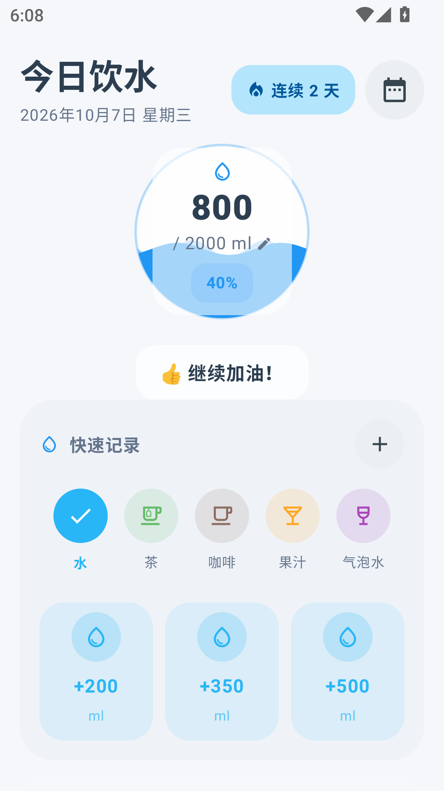
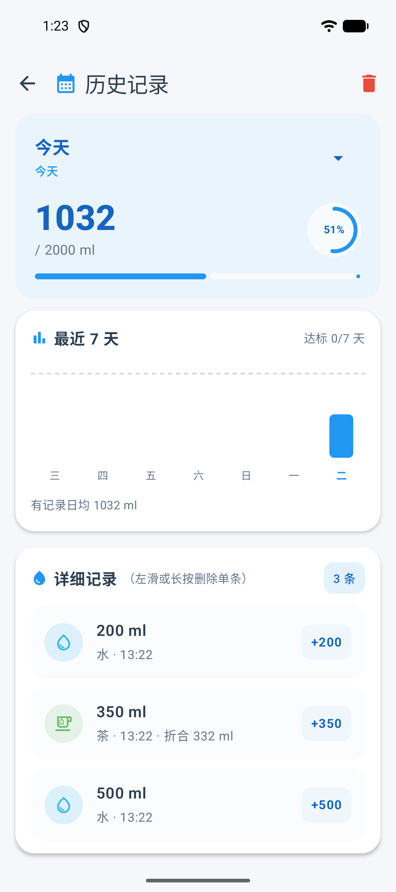
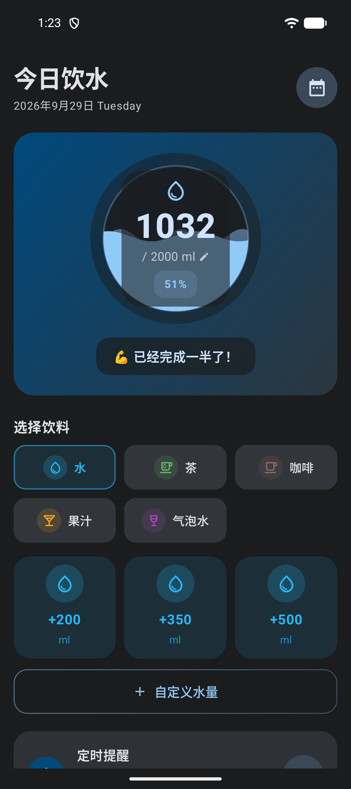

喝水提醒 WaterReminder
按小时提醒你喝水。首页、通知、桌面小部件都能一键记录，并按饮品类型折算真实补水量。开源、无广告、无账号、数据不出设备。
最新版本 读取中…
- MIT 开源
- 无广告 · 无账号
- 数据不出设备
- Android 8.0+
按小时提醒你喝水。首页、通知、桌面小部件都能一键记录，并按饮品类型折算真实补水量。开源、无广告、无账号、数据不出设备。
最新版本 读取中…

首页、提醒通知、桌面小部件三处都有 +200 / +350 / +500 快捷按钮，点一下就记上；也可输入任意毫升数（1 – 5000，范围外红框提示）。
不同饮品的补水效果不一样，按系数计入当日总量，而不是简单累加毫升数。例如 200 ml 咖啡按 160 ml 计。
首次使用按性别、体重、运动量算出推荐每日目标（EFSA 口径，可手改）；日常可在 1000 – 5000 ml 间以 100 ml 步长调整。
首页水球波浪进度随饮水量上升、水面持续流动，总数带滚动动画，并统计连续达标天数。
1 / 2 / 3 小时间隔循环提醒；免打扰时段支持跨午夜（如 22:00 – 次日 08:00）；开机自动恢复提醒。
最近 7 天柱状图（含目标参考线与日均）、月历视图、逐条记录；左滑或长按删除（可撤销），或一键清空当日记录。
4×2 小部件显示当日折算进度与已记毫升数，带同款三档快捷按钮；记录后实时刷新，适配深色模式。
历史页一键把全部记录导出为 CSV 备份，用系统文件选择器选保存位置，不需要存储权限。
Material 3 界面，完整适配深色模式（含深色冷启动）；平板 / 桌面模式（DeX 等）下自适应宽屏布局。
饮水记录存在设备本地数据库，不联网上传；App 唯一的网络请求是检查有没有新版本。
Material 3 界面，深色模式完整适配，跟随系统自动切换。


例如 200 ml 咖啡按 160 ml 计入当日总量。
| 饮品 | 系数 | 说明 |
|---|---|---|
| 水 | 1.00 | 白水 |
| 茶 | 0.95 | |
| 果汁 | 0.85 | |
| 咖啡 | 0.80 | |
| 气泡水 | 1.00 |